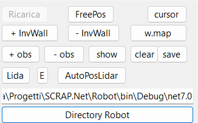
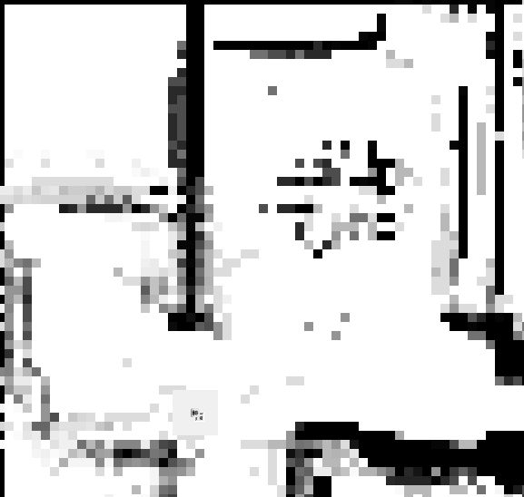
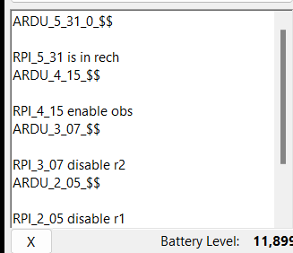
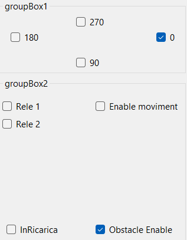

SCRAP.Net Emulator Guide
Overview
The SCRAP.Net emulator is an experimental tool designed to simulate the hardware and asynchronous communication of the robot. It provides a way to test and develop SCRAP.Net functionalities without physical hardware.
Important Notes
- The emulator is experimental and contains test features.
- Not all functionalities are guaranteed to work perfectly.
Configuration
To use the emulator, you need to modify the Configuration.cs file in the MainRobot project:
public static bool FAKE_HW = true;
public static bool FAKE_REMOTE_ARDUINO = true;`
These settings enable the use of fake communication classes for the emulator.
How It Works
- When a command is sent, the fake communication class writes it to a file (
command.json). - The emulator detects the file change, parses, and executes the fake command.
- Once completed, the emulator writes the response to
responseCommand.json. - The system reads the response and proceeds with the next command.
Note: In debug mode, the main folder is .\SCRAP.Net\Robot\bin\Debug\net7.0
Emulator Interface

Control Buttons
- FreePos: Position the robot within the map
- Cursor: When clicked, simulates movement to the clicked point on the map
- +InvWall / -InvWall: Add/remove "invisible wall" points as obstacles
- +obs / -obs: Add/remove temporary obstacles (for testing)
- show: Display obstacles encountered by the robot
- clear: Remove all temporary obstacles
- save: Save obstacles added to the map via clicks
Other Features
w.map: Visualize the weight of detected obstacles in grayscale (best with lidar) 
Lidar and AutoPosLidar: Experimental Lidar functionality
Robot Directory button: Modify the directory where SCRAP.Net runs
Command Textbox: Shows the history of commands received from SCRAP.NET 
Robot Position and Status: Displays current robot information

"Control Move" Button: Opens a form for manually moving the robot
Experimental Features
Some buttons and features (like Lidar) are experimental and not final. Use these with caution and expect potential changes or issues.